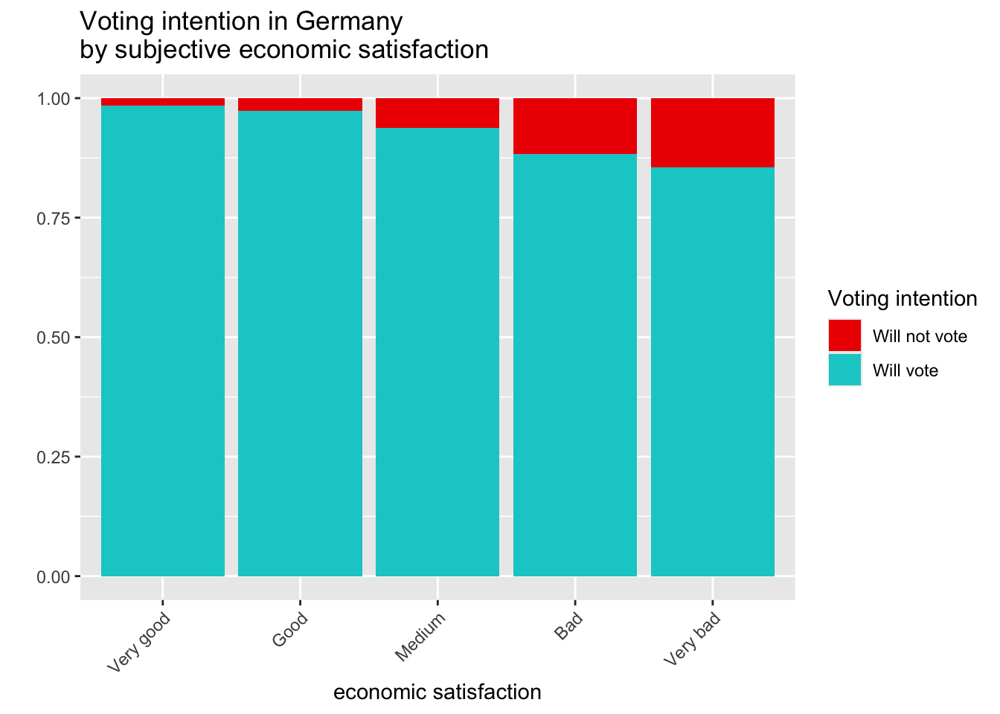

Source: https://search.gesis.org/research_data/ZA5280 License: Open Source
Research Questions
To what extent do economic fluctuations (measured by GDP, growth, or a decline in GDP) influence voter turnout and the election results of the governing parties in German federal elections?
Initial EDA
Code
library(tidyverse)
── Attaching core tidyverse packages ──────────────────────── tidyverse 2.0.0 ──
✔ dplyr 1.1.4 ✔ readr 2.1.5
✔ forcats 1.0.0 ✔ stringr 1.6.0
✔ ggplot2 3.5.2 ✔ tibble 3.2.1
✔ lubridate 1.9.4 ✔ tidyr 1.3.1
✔ purrr 1.0.4
── Conflicts ────────────────────────────────────────── tidyverse_conflicts() ──
✖ dplyr::filter() masks stats::filter()
✖ dplyr::lag() masks stats::lag()
ℹ Use the conflicted package (<http://conflicted.r-lib.org/>) to force all conflicts to become errors
Code
library(here)
here() starts at /Users/lucafriedel/Documents/Uni/SS26/StatProg2/repobaby
To continue, please run 01, 02, and 03 in the code folder.
Code
# First plot.# Initial sorting of the column names, so we can find the proper variables easier.alph_allbus_mini_clean <- allbus_mini_clean[, order(colnames(allbus_mini_clean))]alph_allbus_mini_clean %>%# Filtering only proper values for the ep01 variable. (personal economic evaluation)filter(ep01 %in%c(1, 2, 3, 4, 5)) %>%# Filtering only the proper values for the pv01 variable. (voting intention)# we remove don't know, no answer, answer rejected and not eligible to vote.filter(pv01 %in%c(1, 2, 3, 4, 6, 42, 90, 91)) %>%# we create our own voting variable and make it able to compute expected turnout.mutate(voting_intention =if_else(pv01 %in%c(1, 2, 3, 4, 6, 42, 90), 1, 0),voting_intention =as.factor(voting_intention) ) %>%# ep01 as factormutate(ep01 =as.factor(ep01)) |># recoded ep01mutate(ep01 =recode(ep01,"1"="Very good","2"="Good","3"="Medium","4"="Bad","5"="Very bad" )) |># we remove all unnecessary variables, but keeping the weight is very important.select(ep01, pv01, voting_intention, wghtpew) %>%# We can now plot the weighted result.ggplot(aes(x = ep01, fill = voting_intention, weight = wghtpew)) +geom_bar(position ="fill") +# labels.labs(title ="Voting intention in Germany \nby subjective economic satisfaction",x ="economic satisfaction",y ="",fill ="Voting intention" ) +scale_fill_manual(values =c("red2", "cyan3"), labels =c("Will not vote", "Will vote")) +theme(axis.text.x =element_text(angle =45,vjust =1,hjust =1 ))

As we can see, people with are more negative opinion on the economic situation in Germany are more likely to announce that they would not be voting.
As we can see here, East Germans are more likely to have a negative view on Germany’s economic situation than West Germans.
Analysis Plan
Research question
Data basis: ALLBUS 1980-2023, linking macroeconomic time series (Destatis GDP growth) covering the election year.
Descriptive: Frequency distributions of the DVs, means/SDs of the IV across election years, cross-tabulations of region × voting behavior.
Bivariate: Correlations between GDP growth and aggregated voter turnout/governing-party vote and the change compared to the previous election cycle; chi² tests for categorical control variables.
Multivariate:
Logistic regression 1: Voter turnout ~ GDP growth + control variables
Logistic regression 2: Vote for governing party ~ GDP growth + control variables
Robustness: Interaction effects (GDP × region; GDP × employment status) to test whether economic voting is context-dependent. – Interpretation: Effect sizes (odds ratios, average marginal effects) rather than mere significance tests.
Workflow organisation
Code style
We will follow the Tidyverse Style Guide. Code formatting will be handled using the styler package, ideally configured to format code automatically on save. In addition, we will enforce consistent formatting through a GitHub Actions workflow that checks whether the code complies with the defined style guide.
Packages
As of now we will use following packages in our project:
tidyverse
here
haven
janitor
glue
readr
lubridate
withr
If we don’t actively encounter version incompatibility problems, we will probably not use package version locks as we’re assuming that package versions are generally backwards compatible.
Git workflow
The main idea behind branching is to enable a group of people to work simultaneously on the same project without interfering with each other, while also partitioning features or logically related steps to improve clarity and flexibility. This is exactly how we will use it.
We follow a feature-based branching strategy, where each step or logically related set of steps has its own branch. These branches are accessible to all team members if needed; however, to prevent conflicts, we generally restrict work on a given branch to one team member at a time.
.gitignore
What we will exclude from git is user specific data, because it is irrelevant for others and potentially private, as well as build artefacts and OS noise, as it is irrelevant to others as well.
What we will not exclude is all relevant working data, informational files, as well as environmental files.
Weights
If we need to make graphics that are supposed to be represent Germany accurately, we will use the adequate weighting variable from the data set (I.e. wghtpew from allbus). Other data sets like the polling from dawum already use their own weights and provide the weighted means in their polling numbers.